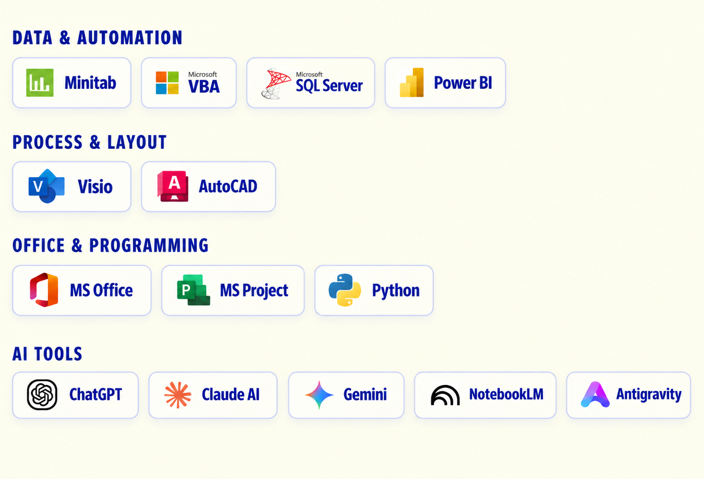

P
O
R
T
F
O
L
I
O
CAO DUONG THANH LUAN
MY EDUCATION
GPA: 3.3/4.0
Ho Chi Minh City University of Technology (VNU)
Logistics and Supply Chain Management

SKILLS & TOOLS
Data-driven. Process-oriented. Tech-enabled.
Using analytical and digital tools to improve processes and support operational decisions.

ACTIVITIES & AWARDS
- Bach Khoa Golf Club Scholarship — Academic Year 2023–2024
- ISE Fund Scholarship for Student Scientific Research Support — 2025
- Well-Rounded Student Award — Academic Year 2024–2025
- Spring Volunteer Campaign Certificate — 2024
- Spring Volunteer Campaign Certificate — 2025
- Spring Volunteer Campaign Certificate — 2026
APPLYING FOR
SUPPLY CHAIN OPERATIONS INTERN
VINAMILK